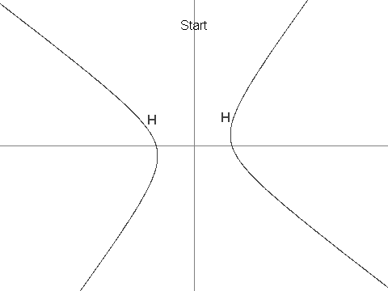

Project Euler 422
Project Euler 422
题目
Sequence of points on a hyperbola
Let \(H\) be the hyperbola defined by the equation \(12x^2 + 7xy - 12y^2 = 625\).
Next, define \(X\) as the point \((7, 1)\). It can be seen that \(X\) is in \(H\).
Now we define a sequence of points in \(H, \{P_i : i \ge 1\}\), as:
\(P_1 = (13, 61/4).\)
\(P_2 = (-43/6, -4).\)
For \(i > 2\), \(P_i\) is the unique point in \(H\) that is different from \(P_{i-1}\) and such that line \(P_iP_{i-1}\) is parallel to line \(P_{i-2}X\). It can be shown that \(P_i\) is well-defined, and that its coordinates are always rational.

You are given that \(P_3 = (-19/2, -229/24), P_4 = (1267/144, -37/12)\) and \(P_7 = (17194218091/143327232, 274748766781/1719926784)\).
Find \(P_n\) for \(n = 11^{14}\) in the following format:
If \(P_n = (a/b, c/d)\) where the fractions are in lowest terms and the denominators are positive, then the answer is \((a + b + c + d) \bmod 1000000007\).
For \(n = 7\), the answer would have been: \(806236837\).
解决方案
令\(N=11^{14}\)。我们首先进行线性变换，把 \(H\) 化成 \(u^2-v^2=1.\)定义\(\psi:H\to \Gamma,(u,v)=\psi(x,y)=\dfrac1{50}(7x+y,-x+7y).\)直接计算：\(u^2-v^2=\dfrac{(7x+y)^2-(-x+7y)^2}{2500}=\dfrac{48x^2+28xy-48y^2}{2500}=\dfrac{12x^2+7xy-12y^2}{625}=1.\)所以 \(\Gamma=\{(u,v)\in\mathbb Q^2:u^2-v^2=1\}\)。
逆变换为\(\psi^{-1}(u,v)=(x,y)=(7u-v, u+7v).\)并且\(\psi(X)=\left(\dfrac{49+1}{50},\dfrac{-7+7}{50}\right)=(1,0)=E.\)
在\(\Gamma\)上，我们先定义一个二元运算：\((u,v)\oplus(u',v')=(uu'+vv', uv'+vu').\)它的作用是把后面的平行条件变成代数递推。先检查几个基本性质：
- 封闭性。若 \(A=(u,v),B=(u',v')\in\Gamma\)，记\(C=A\oplus B=(U,V)=(uu'+vv',uv'+vu'),\)则\(U^2-V^2=(uu'+vv')^2-(uv'+vu')^2=(u^2-v^2)(u'^2-v'^2)=1.\)所以 \(C\in\Gamma\)。
- 单位元与逆元。直接代入可得\((u,v)\oplus(1,0)=(u,v),\)所以单位元是 \(E=(1,0)\)；并且\((u,v)\oplus(u,-v)=(u^2-v^2,0)=(1,0)=E,\)因此逆元是 \((u,-v)\)。
取\(C=A\oplus B.\)则\(\overrightarrow{AB}=(u'-u,v'-v),\overrightarrow{EC}=(uu'+vv'-1,uv'+vu').\)两向量平行当且仅当二维叉积为零，即\(\det(\overrightarrow{AB},\overrightarrow{EC})=0.\)展开得到\((u'-u)(uv'+u'v)-(v'-v)(uu'+vv'-1),\)再利用\(u^2-v^2=1, u'^2-v'^2=1\)可化简为 \(0\)。因此\(AB\parallel CE.\)
由题意，\(\psi\) 是线性变换，所以它保持平行关系。设\(Q_i=\psi(P_i), E=\psi(X)=(1,0),\)则\(P_iP_{i-1}\parallel P_{i-2}X\iff Q_iQ_{i-1}\parallel Q_{i-2}E.\)而上面的结论告诉我们：对 \(A=Q_i,B=Q_{i-1}\)，点\(C=A\oplus B\)满足\(AB\parallel CE.\)这与题目给出的平行方向一致，于是得到递推等价式\(Q_i\oplus Q_{i-1}=Q_{i-2}.\)
我们定义\(\phi:\Gamma\to\mathbb Q^{\ast}, \phi(u,v)=u+v=z.\)那么有\(\phi(A\oplus B)=\phi(A)\phi(B),\)即群同构到乘法群。反变换：\(\phi^{-1}(z)=\left(\dfrac{z+z^{-1}}2,\dfrac{z-z^{-1}}2\right).\)于是递推变成\(z_i z_{i-1}=z_{i-2}(i\ge3).\)先算初值：\(Q_1=\psi(P_1)=\left(\dfrac{17}{8},\dfrac{15}{8}\right)\Rightarrow z_1=4,Q_2=\psi(P_2)=\left(-\dfrac{13}{12},-\dfrac{5}{12}\right)\Rightarrow z_2=-\dfrac32.\)所以\(z_i=\dfrac{z_{i-2}}{z_{i-1}}.\)
令 \(F_0=0,F_1=1,F_{i}=F_{i-1}+F_{i-2}(i\ge 2)\)是斐波那契数列。设\(z_n=z_1^{\alpha_n}z_2^{\beta_n}.\)由 \(z_n=z_{n-2}/z_{n-1}\) 得\(\alpha_n=\alpha_{n-2}-\alpha_{n-1},\beta_n=\beta_{n-2}-\beta_{n-1},\)配初值 \((\alpha_1,\alpha_2)=(1,0),(\beta_1,\beta_2)=(0,1)\)，解得\(\alpha_n=(-1)^nF_{n-2},\beta_n=(-1)^{n+1}F_{n-1}.\)即
\[ z_n= \left(\frac{z_2^{F_{n-1}}}{z_1^{F_{n-2}}}\right)^{(-1)^n}. \]
设\(A=F_{N-1}, B=2F_{N-2}+F_{N-1}, s=(-1)^A\in\{+1,-1\}.\)由\(z_N=\left(\dfrac{(-3/2)^{F_{N-1}}}{4^{F_{N-2}}}\right)^{(-1)^N}=\left(s\cdot\dfrac{3^A}{2^B}\right)^{(-1)^N},\)可得：
- 当 \(N\) 为奇数时（\((-1)^N=-1\)）：\(z_N=s\cdot\dfrac{2^B}{3^A}.\)
- 当 \(N\) 为偶数时（\((-1)^N=+1\)）：\(z_N=s\cdot\dfrac{3^A}{2^B}.\)
对本题的\(N\)，可见有\(N-1\equiv0\pmod3,\)而 \(F_k\) 是偶数当且仅当 \(k\equiv0\pmod3\)，故 \(A=F_{N-1}\) 为偶数，\(s=1\)。因此本题实际落在奇数分支且可化为\(z_N=\dfrac{2^B}{3^A}.\)
接下来我们回到 \((x,y)\) 并写出 \(a,b,c,d\)。由\(u=\dfrac{z+z^{-1}}2, v=\dfrac{z-z^{-1}}2,(x,y)=(7u-v,u+7v),\)得到\(x=3z+\dfrac4z, y=4z-\dfrac3z.\)
当 \(N\) 为奇数时，代入 \(z=s\cdot 2^B/3^A\)：\(x=s\cdot\dfrac{2^{2B-2}+3^{2A-1}}{2^{B-2}3^{A-1}},y=s\cdot\dfrac{2^{2B+2}-3^{2A+1}}{2^B3^A}.\)于是可取\(a=s\left(2^{2B-2}+3^{2A-1}\right), b=2^{B-2}3^{A-1},c=s\left(2^{2B+2}-3^{2A+1}\right), d=2^B3^A.\)从而
\[a+b+c+d=s\left(17\cdot2^{2B-2}-8\cdot3^{2A-1}\right)+13\cdot2^{B-2}3^{A-1}.\]
当 \(N\) 为偶数时，代入 \(z=s\cdot 3^A/2^B\)：\(x=s\cdot\dfrac{2^{2B+2}+3^{2A+1}}{2^B3^A},y=s\cdot\dfrac{3^{2A-1}-2^{2B-2}}{2^{B-2}3^{A-1}}.\)于是可取\(a=s\left(2^{2B+2}+3^{2A+1}\right), b=2^B3^A,c=s\left(3^{2A-1}-2^{2B-2}\right), d=2^{B-2}3^{A-1}.\)从而
\[a+b+c+d=s\left(15\cdot2^{2B-2}+10\cdot3^{2A-1}\right)+13\cdot2^{B-2}3^{A-1}.\]
为了高效计算斐波那契数列\(F\)，若\(T=\begin{pmatrix}-1&1\\1&0\end{pmatrix},T^{N-1}=\begin{pmatrix}p&q\\q&p-q\end{pmatrix},\)则：
- \(N\) 为奇数 时，\(p=F_N, q=-F_{N-1},\)故\(A=-q, B=2p+q.\)
- \(N\) 为偶数 时，\(p=-F_N, q=F_{N-1},\)故\(A=q, B=-(2p+q).\)
代码
1 | N = 11 ** 14 |